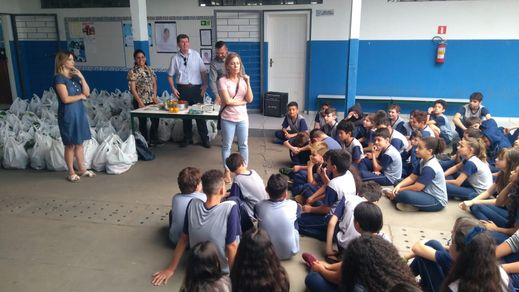

primeiro dia de aula
Aqui a professora estva se apresentando
Locais e seus encantos.
Aqui a professora estva se apresentando
Treinamento de incendio

Estadio situado na Rua Ubaldino do Amaral, no bairro Alto da Glória em Curitiba.Sede do Coritiba Futebol Clube
Liga Arena,Estadio situado em Curitib/PR, que tem como recorde de Publico um jogo do Paraná Clube.
Ponte Estaida,Um ponto turistico em Curitiba..

O Jardim Botânico de Curitiba, ou Jardim Botânico Francisca Rischbieter, é um dos principais pontos turísticos da cidade de Curitiba, capital do estado brasileiro do Paraná. Localiza-se no bairro Jardim Botânico. Em 2007 foi o monumento mais votado numa eleição para escolha das Sete Maravilhas do Brasil, promovido pelo site Mapa-Mundi.[1] .